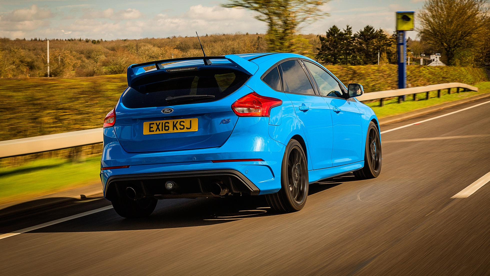
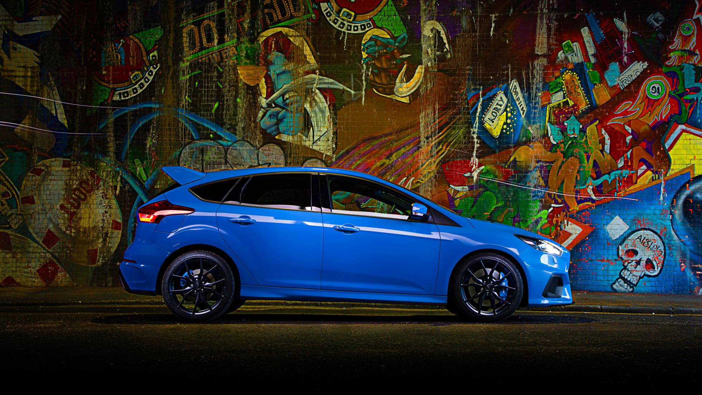
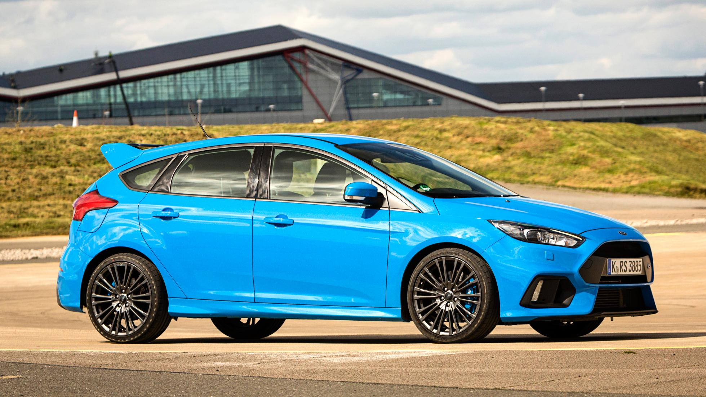
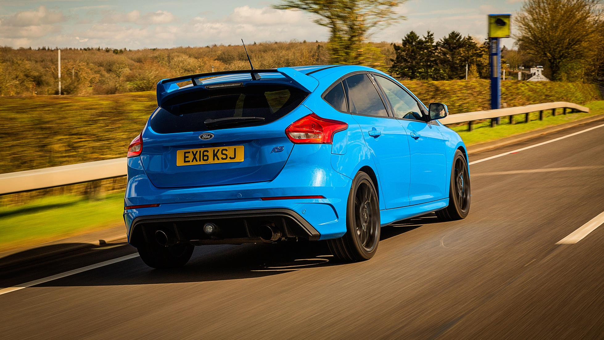
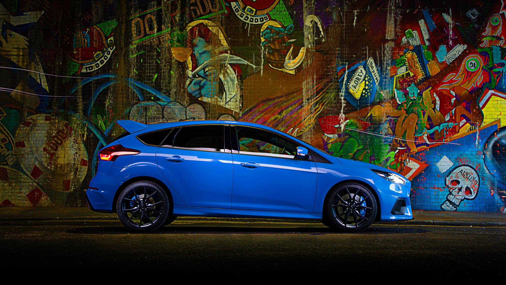
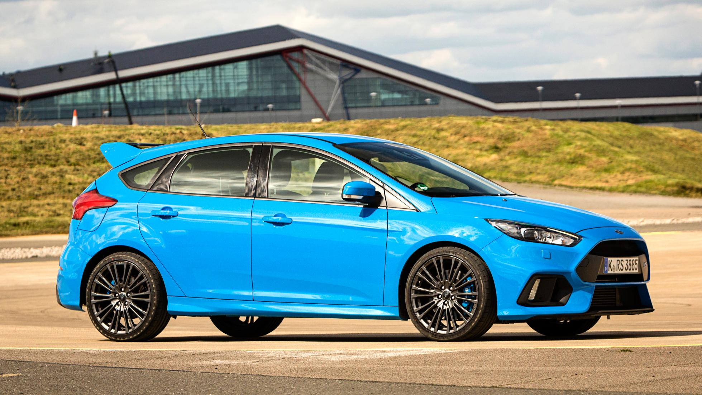
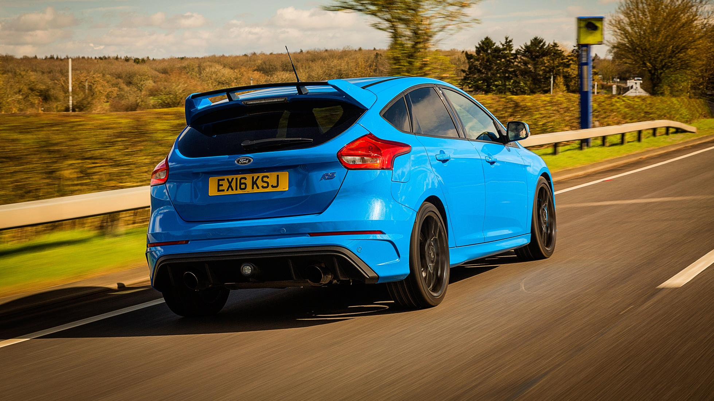
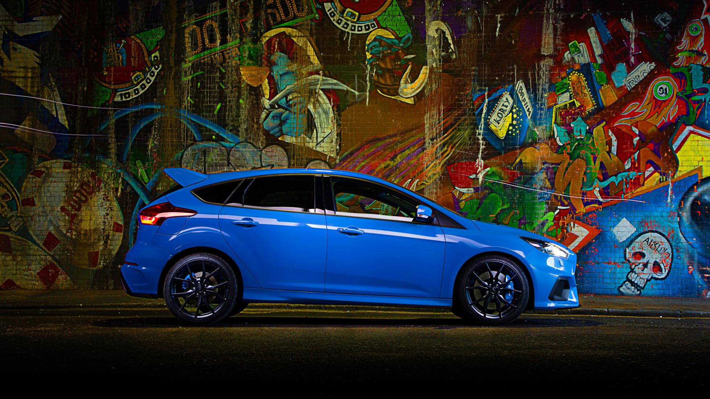
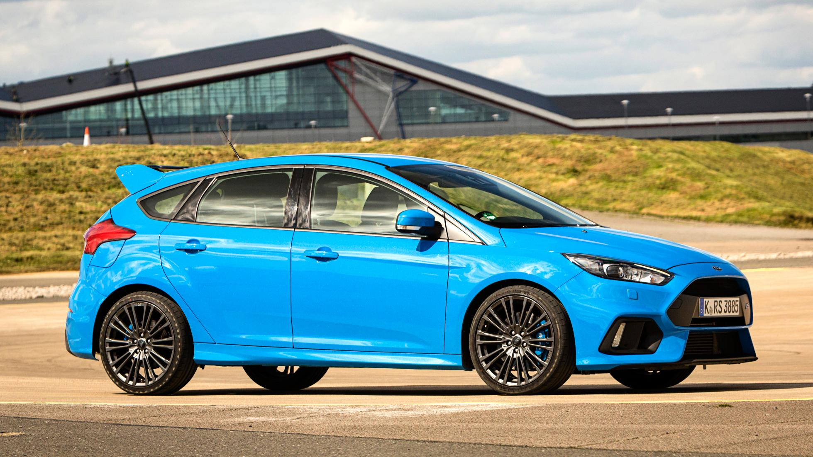

| MODELLO | Prezzo | l motore e disp. cilindri | CV | km/h | 0-100 | km/l | kg |
| RS | 39.500 | 2251 L4 | 350 | 266 | 4,7 | 13 | 1437 |



La nuova Ford Focus RS, di cui era stato dato un assaggio al Salone di Londra lo scorso anno, viene presentata in versione definitiva a Ginevra, proprio a ridosso della messa in commercio. L'inizio della produzione, nel 2008, marcava i 40 anni della gamma RS e i 10 della prima Focus. Lo scopo del team di sviluppo capitanato da Jost Capito, nel concepire la vettura, era quello di abbinare la tradizionale grinta e potenza delle vetture che recano la sigla RS con la facilità di guida di una normale Focus, il tutto mantenendo i consumi a un livello accettabile. E l'obiettivo può dirsi raggiunto, grazie a alcune innovazioni tecniche, legate al sistema di sospensioni e al differenziale, che hanno consentito di mantenere la trazione anteriore, scartando quella integrale che, visto l'elevato picco di coppia, poteva sembrare la a soluzione migliore per ottimizzare la tenuta di strada, ma che avrebbe inevitabilmente inciso sul peso della vettura, sull'attrito e sui consumi.